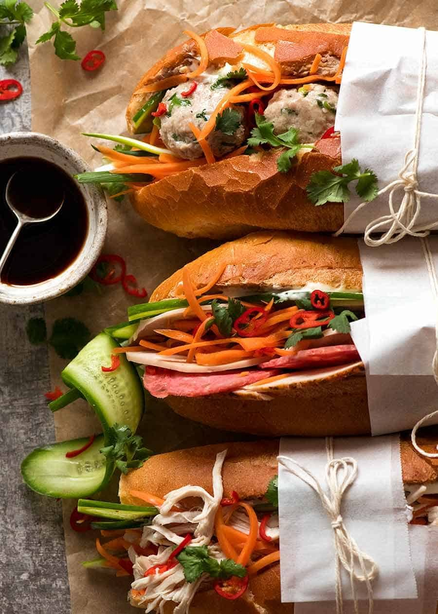

Banh Mi (Vietnamese Sandwich) Recipe - RecipeTin Eats

Guess what? You DO NOT need trek wide and far to a Vietnamese neighbourhood to get your Vietnamese sandwich fix! This
Banh Mi recipe covers the truly authentic meats as well as how to make an exceptional Banh Mi by just going to your
everyday grocery store!
What Goes in Banh Mi
- Vietnamese Cold Cuts
- Very Crusty Baguettes
- Pate
- Mayo
- Pickled Carrots
- Cucumber, Coriander/Cilantro, Green Onion, Chilli
- Maggi Seasoning
Assembling Your Banh Mi
- Split the roll down the top middle (not along the side like
you'd normally do)
- Smear with pate then mayo on one side (both if you're feeling
super indulgent)
- Jam in the ham, cucumber strps, carrot, green onion, then lastly
coriander/cilantro
- Finish with a sprinkle of chilli(go hard or go home!😂) and a little
sprinkle of Maggi Seasoning (about 1/2 tsp)